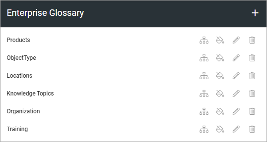
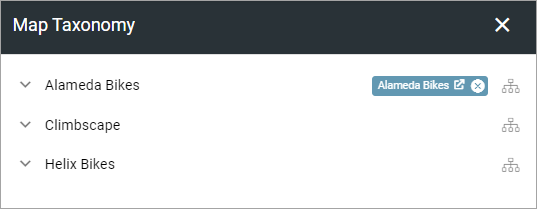
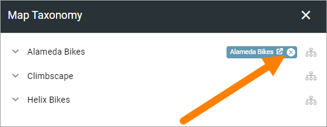
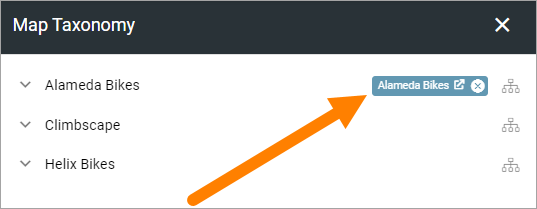
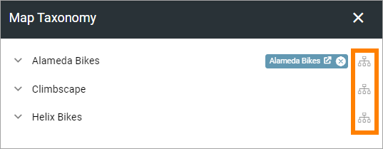
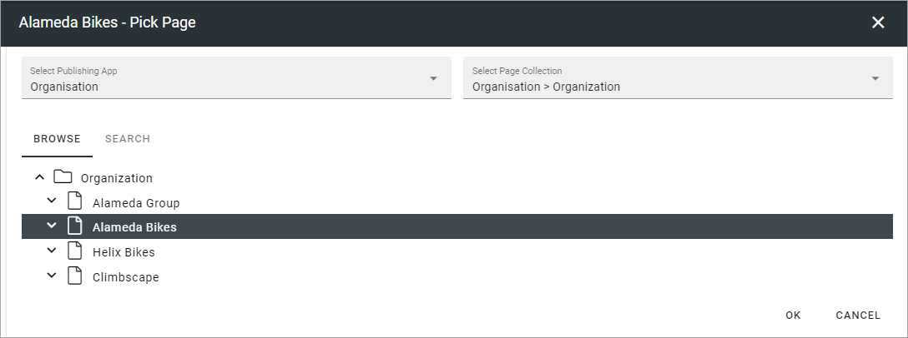

Enterprise Glossary¶
This is an ongoing, preliminary documentation for new functionality to come in Omnia 6.5.
Enterprise Glossary can be used for taxonomies/terms for more details. It can, for example, be to brand the term or to connect the term to a page for more information. Terms can even be created specifically to provide more information where it’s needed.
The existing glossary sets are listed here:
You use the icons to (from left to right):
- Edit taxonomy mapping.
- Edit look and feel.
- Edit settings for the information page (if used).
- Delete the glossary set.
Create a new glossary set¶
To create a new glossary set, do the following:
- Click the plus.

- Map the glossary set to taxonomy.

If you don’t want to connect the glossary set to an information page - for example if it’s branding you want to do - you’re done now.
To connect to an information page, do the following:
- Select “Page” for Details provider.
- Set the settings needed.
- Show Read More: This is a link to the information page. If you just want to show the Summary from the page as information, deselect this option.
- Image: Select the property to use for the image.
- Image Ratio: Select image ratio to be shown in the information dialog.
- Name: (A description will be added soon).
- Summary: Select property for the summary. This is what will be shown in the information dialog (see below).
- Description: (A description - of the Description (!) - will be added soon).
- Person: Select property for the name to be shown in the information dialog (see below).
See below for an example of information connected to a term.
When you are done:
- Click create.
Edit taxonomy mapping¶
When you click the icon to edit taxonomy mapping, the following is shown (for example):
To remove the existing mapping, to be able to remap, click the x:
For a preview of the information, click the taxonomy label:
Here’s a simlple example of a preview:

The information shown is the Summary from the connected page. The user can click READ MORE to go to the page, for the full information.
To edit the mapping, click the icon to the right:
Use the following to edit the mapping:
The Page Picker is used here. For more information, see the heading “Navigating and picking”, on this page: Page Picker
Edit look and feel¶
When you click the icon to edit look and feel, the following is shown (for example):

You can see a preview of the look and feel here (text color, background color etc).
To edit, click the icon to the right:

Use the fields to edit background color, text color, icon type and icon.

When you’re done, click OK to save the changes (or CANCEL to ignore them.)
Edit settings for the information page¶
When you click the icon to edit the settings for the information page, the following is shown (for example):

Don’t forget to click OK to save he changes.